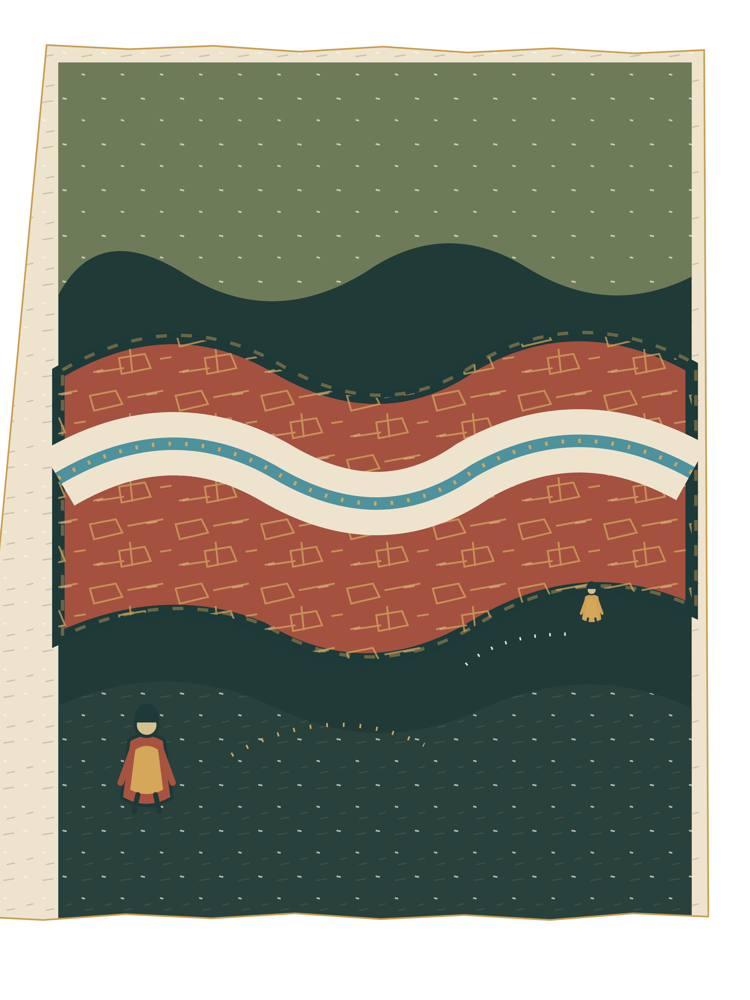

Distance and passage
The Current Will Not Join Us
24 x 32 cm · layered SVG matrix · textured PNG impression
Three digital color layers; simulated grain and registration.
Three digital color layers; simulated grain and registration.
A red built edge opens around a broad cream and blue current. Two anonymous witnesses hold different banks at different scales. The current passes between them and beyond the wall; their shared place does not settle into a meeting.
The pale route is the largest unprinted shape. Blue carries it across the wall; ochre drift marks a second pass. Neither figure tells us what the other sees. The scene is openly invented and depicts no named site or cultural account.